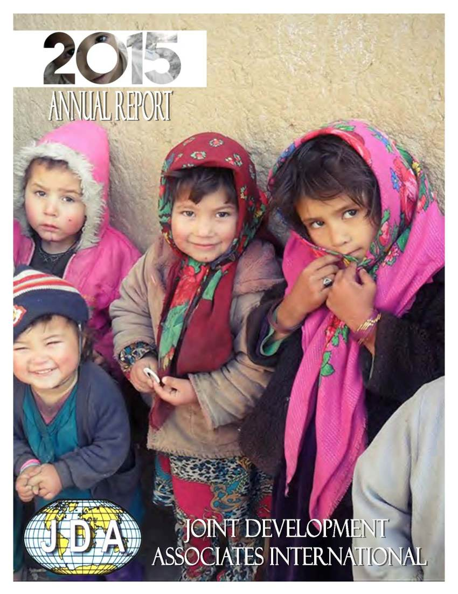
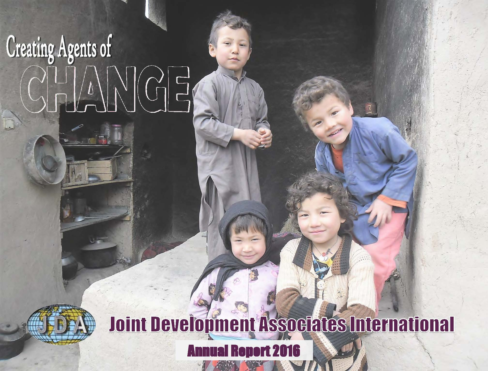
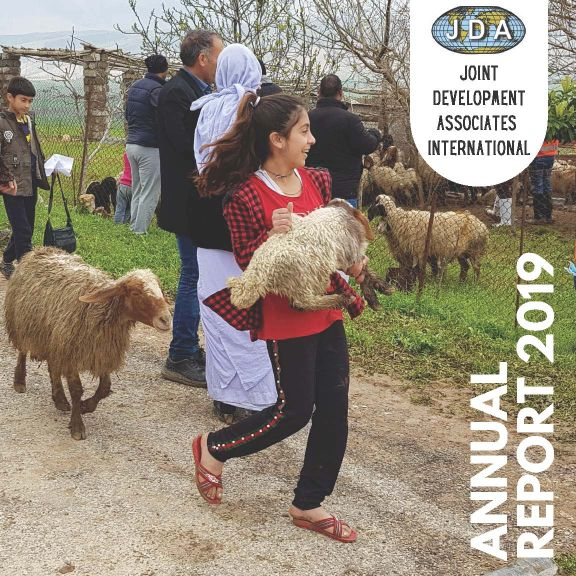
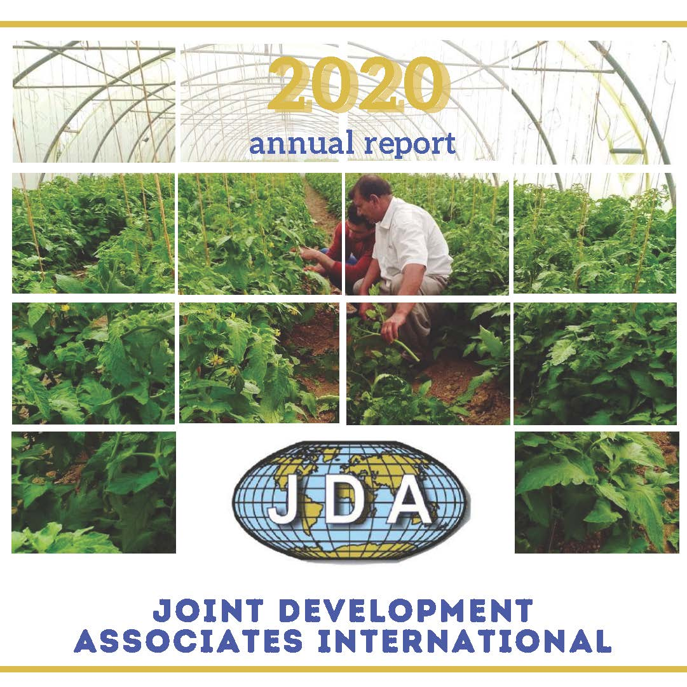

Annual Reports & Full Timeline
Explore the complete story of JDA's 32-year journey through our detailed annual reports and the comprehensive timeline.
Annual Reports (2015–2020)
Click any year below to open or download the full report.
2015

Open 2015 Report
2016

Open 2016 Report
2017
Open 2017 Report
2018
Open 2018 Report
2019

Open 2019 Report
2020

Open 2020 Report
Complete 32-Year Timeline (1993–2025)
JDA's definitive timeline — most major milestones from founding to closure.